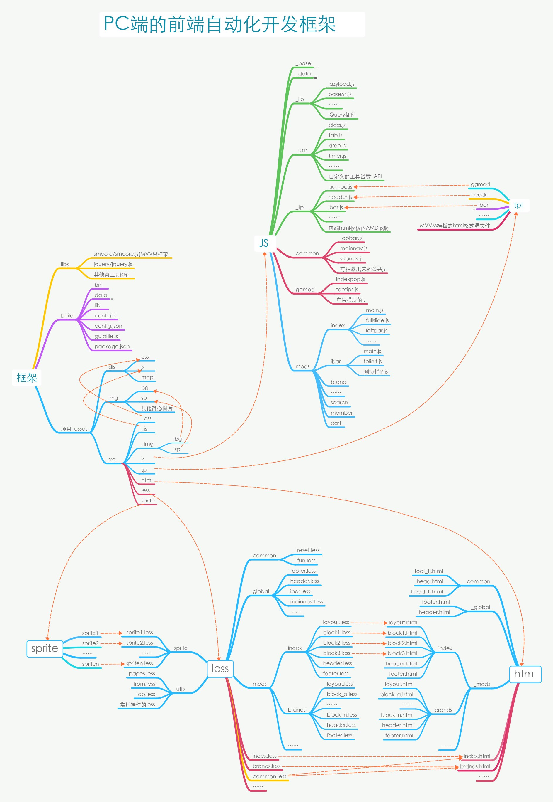

前端自动化开发框架和部署说明
by Pang.J.G
本项目基于nodejs环境下的Gulp.JS
安装 nodeJS 环境
-
前往 http://nodejs.org/ 安装nodeJS
- 注意系统是32位还是64位的，选择对应的版本
- 如果是windows系统，需自行设置好环境变量，将nodejs的路径加入到系统的
path环境变量中
安装
gulp全局支持，在终端执行npm install -g gulp
项目部署和初始化
本代码库包含了一个静态demo，如在实际开发的项目中部署，例如，你打算将前端静态资源放在 ~/statics/ 文件夹，那么：
STEP 1：复制源码
将 build 目录下的源码复制到 statics 文件夹下；
如果，单独对源码进行代码管理，可以使用以下命令：
git clone https://github.com/lmtdit/bdCore.git build
STEP 2：安装依赖
进入build目录，执行 npm install，安装依赖的nodejs模块
STEP 3：初始化
模块安装完成后，使用如下命令进行初始化
gulp init
STEP 4：目录结构
项目初始化后，会根据 build/config.json 中的配置生成如下的目录结构：
├── build
├── bin // shell执行命令目录
├── data // 第三方JS模块目录
├── lib // 核心的构建方法
├── config.js // 开发配置文件
├── config.json // 项目构建的配置入口文件
├── gulpfile.js // gulp启动配置入口文件
└── package.json // nodeJS依赖安装的包管理文件
├──_src //静态源码目录，原则上，这个目录中的所有资源是不需要发布到预发布及生产环境的
├──_css //本地debug的缓存目录
├──_js //本地debug的缓存目录
├──_img //本地debug的缓存目录
├──html //后端html模板的构建目录，支持后端模板引擎语言，如smarty
├──js //js源码，AMD模块规范
├──less //CSS的less源码目录
├──sprite //雪碧图的源码目录
└──tpl //前端MVVM引擎的模板源码目录，开发维护的是html，但生产时会被封装成ADM规范的js模块
├── asset //前端资源的生产目录，根据config.json的配置来定
├──css //带hash的css文件，保存压缩版和源码版两个版本
├──js //带hash的css文件，保存压缩版和源码版两个版本
├──img //图片资源目录
├ ├──bg //css中用到的单个背景图的hash格式输出目录，自动构建
├ └──sp //css中用到的雪碧图的hash格式输出目录，自动构建
└──map //保存css、js以及雪碧图的hash的map如果
build/config.json文件不存在，则初始化过程会自动生成，默认配置的源文件是build/data/default.json。
STEP 5：前后端解耦
为何要解耦？如何解耦？
构建框架则会根据 build/config.json 中的设置，将map文件生成到 {{distPathName}}/map 目录中，即默认的map源码路径为 assets/map ，文件分别是
cssbgmap.json // css中背景图片资源map，或则js中用到的图片资源map
cssmap.json // css生产文件的map
jsLibs.json // js生产文件的map
jsmap.json // js源文件的map
资源的map有了，通过map就可以定位静态资源，但在项目的实施过程中，如果不是纯基于API的开发项目，那么还需要先确立服务端的模板层(view层)该由谁来维护？
前端维护服务端模板
如果由前端来维护，那么，可将静态的demo构建机制作为后端模板的构建机制，直接在开发过程中解决资源的定位问题，并对html模板进行压缩优化。
这样是最优化的做法，如果前端团队的能力模型符合这样的要求，建议采用这一方式。
后端维护服务端模板
如果由后端来维护，前端只提供demo，那么在在发布测试或上线过程中，前端开发人需要通过发布命令来生成静态资源的map，并上传到服务端的代码码库中，然后在服务端的模板层解析过程中解决前端资源的定位问题。
这种方式是前后端可能会耦合在一起，因为模板层要依赖于前端的map。由于考虑到灰度发布的情况，静态资源的路径（文件名）上会包含有内容的hash，那么在快速开发迭代中，静态资源变化会使得map也频繁改变。
同时，后端模板也需要随时修改，如果两边不同步就会发生静态资源定位错误，导致业务出错，这是很危险的，只要map的更新，服务端要上新代码，就要先征求前端的同意，确定当前的map是不是和当前模板是相对应的。
事实上，只要服务端存在view层并且都需要引用前端资源（css/js/img），不管该模板层由谁来需要维护，都存在上述的问题，前后端就无法彻底解耦。
基于上述的分析，解耦建议：
- 1，服务端模板的模板层，要独立于后端的业务逻辑，单独进行版本控制；
- 2，前端生成的map也应当存放在模板层的代码库中，进行统一的版本控制；
- 3、这个服务端的模板层代码库建议由前端来负责维护。
优点：
- 这样做的好处非常明显，不管前端代码优化、SEO优化、问题版本的回滚，都很容易；
- 前后端分离开发的好处自然不用多说，前后端彻底解耦，可大规模推广到各种前后端协作的项目中
缺点：
- 前端开发人员的要求提高了，需要具备一定服务端的语言能力；
- 即便是模板层也是要依赖于后端环境的，虽然是相对简单的开发环境，前端开发人员还需要部署后端环境；
- 性能有一定牺牲，毕竟不是直接插入静态资源，而是通过解析map间接的方式插入，需要消耗一定的服务器运算时间。
基于php的静态资源解析的实现（demo）
服务端模板解析前端资源，这个需要结合环境来实现，而且需要预留debug的接口或参数，因此，这个机制的实现需要结合项目的实际情况来做处理。 以下是一个基于php的静态资源解析实现，仅供参考：
js的map解析实现
/**
* init_js - 构造前端页面js资源请求的函数
* @author pjg
* @param [string] $js_names 传入需要加载的js名称,不能为空,多个js用半角逗号“,”隔开
* @param [string] $CURRENT_Environment 当前的环境，默认是'pc'，即静态域名为 PCSTATICS_SITE_URL
* ,如果值为'bc',则为BCSTATICS_SITE_URL
* @return string
* @example
* <?php echo init_js('sb.corelibs.js,sb.mods_index.js,sb.mods_list.js,piwik.js');?>
* 当在local开发环境下，默认启动require+jquery来调试源码，同时提供在URL加上 ‘dev=2’ 的参数时，则可以开启生产代码的调试
* 当在test、rc以及生产环境下，在URL上加上 ‘dev=1’ 的参数时，则可以开启源码调试模式，以便错误的排查
*
*/
function init_js($js_names,$CURRENT_Environment='pc'){
$jslink = '';
// 调试开关 dev=1
$_is_debug = $_GET['dev']==1 ? true : false;
$_is_local = CURRENT_DOMAIN != 'test.' && CURRENT_DOMAIN != 'rc.' && CURRENT_DOMAIN != '';
// 判断当前静态环境
$static_path = ($CURRENT_Environment=='bc' ? BCSTATICS_SITE_URL : PCSTATICS_SITE_URL);
$static_path .= (($_is_debug||$_is_local)&&$_GET['dev']!=2) ? '/_src' : '/assets';
$js_path = $static_path . ((($_is_debug||$_is_local)&&$_GET['dev']!=2) ? '/_js/' : '/js/');
// 处理请求
$_tempArr = explode(",",$js_names);
$map_path = BASE_TEMPlATES_ROOT_PATH .'/map/'.$CURRENT_Environment; // 构造map的资源路径
$jsmap = require_once($map_path.'/jslibs.php');
foreach ($_tempArr as $key => $value) {
// 如果是本地，并且URL参数dev=2，那么可以直接调试生产码
if(($_is_debug||$_is_local)&&$_GET['dev']!=2){
// 调试模式
if($value=='sb.corelibs.js'){
$jslink .= '<script>var STATIC_PATH="'.$static_path.'",VARS=window.VARS={},_VM_=window._VM_={};</script>';
$jslink .= '<script src="'.$js_path.'vendor/require/require.js"></script>' . "\n";
$jslink .= '<script src="'.$js_path.'vendor/jquery/jquery.js"></script>' . "\n";
$jslink .= '<script src="'.$js_path.'require_cfg.js?t='.time().'"></script>';
}else{
if(strpos($value,'sb.')===0){
$jsmod_name = str_replace('_','/',str_replace('.js','',str_replace('sb.','',$value)));
$jslink .= '<script>require(["' . $jsmod_name . '"])</script>';
}else{
$jslink .= '<script src="'.$js_path.$value.'?t='.time().'"></script>';
}
}
}else{
// 生产模式
$js_name = $value;
$_id = str_replace('.js','',str_replace('sb.','',$value));
if(array_key_exists($value,$jsmap)){
$js_name = $jsmap[$value]['distname'];
}else{
$js_name = $value.'?t='.date("Ymdhi");
}
if($value=='sb.corelibs.js'){
$jslink .= '<script>var STATIC_PATH="'.$static_path.'",VARS=window.VARS={},_VM_=window._VM_={};</script>';
}
$jslink .= '<script src="'.$js_path.$js_name.'" id="'.$_id.'"></script>';
}
}
return $jslink;
}
css的map解析实现
/**
* init_css - 构造前端页面css资源请求的函数
* @author pjg
* @param [string] $css_names 传入需要加载的css名称,不能为空,多个css用半角逗号“,”隔开
* @param [string] $CURRENT_Environment 当前的环境，默认是'pc'，即静态域名为 PCSTATICS_SITE_URL
* ,如果值为'bc',则为BCSTATICS_SITE_URL
* @return [string]
* @example
* <?php echo init_css('common.css,index.css,test.css','pc');?>
*/
function init_css($css_names,$CURRENT_Environment='pc'){
$csslink = '';
// 调试开关 dev=1
$_is_debug = $_GET['dev']==1 ? true : false;
$_is_local = CURRENT_DOMAIN != 'test.' && CURRENT_DOMAIN != 'rc.' && CURRENT_DOMAIN != '';
// 判断当前静态环境
$static_path = ($CURRENT_Environment=='bc' ? BCSTATICS_SITE_URL : PCSTATICS_SITE_URL);
$static_path .= (($_is_debug||$_is_local)&&$_GET['dev']!=2) ? '/_src/_css/' : '/assets/css/';
// 处理请求
$map_path = BASE_TEMPlATES_ROOT_PATH .'/map/'.$CURRENT_Environment; // 构造map的资源路径
$cssmap = require_once($map_path.'/cssmap.php');
$_tempArr = explode(",",$css_names);
foreach ($_tempArr as $key => $value) {
$css_name = $value;
if(($_is_debug||$_is_local)&&$_GET['dev']!=2){
// 调试模式
$css_name = $value.'?t='.time();
}else{
// 生产模式
if(array_key_exists($value,$cssmap)){
$css_name = $cssmap[$value]['distname'];
}else{
$css_name = $value.'?t='.date("Ymdhi");
}
}
$csslink .= '<link href="' . $static_path . $css_name . '" rel="stylesheet" type="text/css">';
}
return $csslink;
}开发
ok，上述的事项已经部署完成，那么我们可以进入前端的项目开了。使用 gulp 命令默认启动开发模式：
gulp
更多参数使用说明
以gulp命令启动程序，它可接收两个参数，分别是
参数1： --env 或者 --e
此参数是环境参数，默认值为'local'，其他值分别为test、rc、www，分别针对测试、预发布和生产环境，在测试和发布环节中使用。
参数2： --debug 或者 --d
此参数为调试开关，带上此参数，html模板则开启debug模式
命令使用示例: 1、local开发环境的watch命令：
gulp
# or
gulp --e local
# or
gulp --env local
#以上三个命令是等效的2、local开发环境的debug命令：
gulp --d
# or
gulp --debug
# or
gulp --env local --d3、发布代码
# 测试环境
gulp --e test
gulp --env test
# 预发布环境
gulp --e rc
gulp --env rc
# 生产环境
gulp --e rc
gulp --env rc
4、其他命令使用说明
查看自动化框架支持的项目构建命令
gulp -T
gulp helper
本前端开发框架还支持如下命令：
Tasks
├── init //用于前端项目的初始化
├── del.data //删除构建过程的缓存数据
├── del.dist //清理自动构建的静态文件[生产文件]
├── jslibs //生产js的第三方库列表，主要用于构建require.config的paths对象
├── cfg //生成require.config
├── tpl //将html模板构建成为JS模块，即html转化为AMD规范的js文件
├── js2dev //匿名的AMD模块构建为具名的AMD模块，并发布到源码的缓存目录[_src/_js/]，供本地调用
├── js2dist //按AMD规范的js模块转化为原生的js，并按依赖顺序COMBO成1个文件，然后发布到生产目录，生成2份代码
├── sp //合并生产雪碧图和对应了LESS
├── bgmap //所有css将用到背景图[包括自动生产的雪碧]生产一份hash map（json文件）
├── less //将less输出为css，并发布到源码的缓存目录[_src/_css/]，供本地调用
├── css //将缓存目录中的css压缩并自动将引用背景图加上MD5戳，然后发布到生产目录
├── all2dist //css和js源码的缓存目录中的文件发布到生产目录
├── html //将模块化的静态html文件构建成一个静态可使用的html demo（img scr的引用图片替换为带MD5戳）
├── watch //gulp的watch任务，可快速启动开发者模式
├── default //默认任务，默认进入开发模式
└── release //发布任务规范和建议
编程规范
架构流程和目录规范
